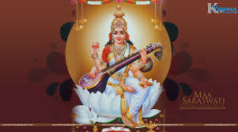
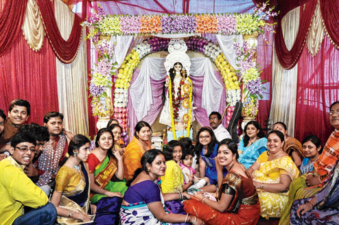
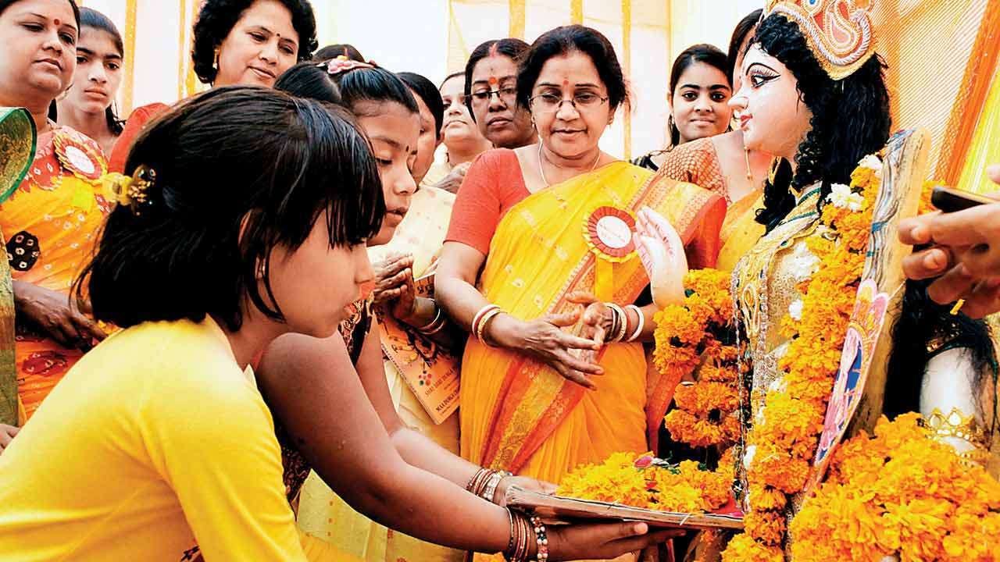
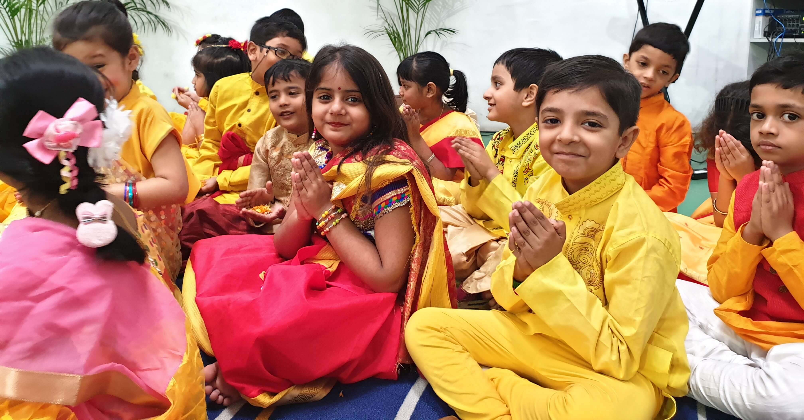

Saraswati is the Shakti, the power and the consort of Brahma the creator. Hence she is the procreatrix, the mother, of the entire creation.The earliest known mention of Saraswati as a goddess is in Rigveda. She has remained significant as a goddess from the Vedic age through modern times of Hindu traditions. The
  oddess is also revered by believers of the Jain religion of West and Central India, as well as some Buddhist sects. In the Rigveda she represents a river and the deity presiding over it. Hence, she is connected with fertility and purification. Saraswati represents power and intelligence from which organized creation proceeds.
She is considered as the personification of all knowledge - arts, sciences, crafts, and skills. Knowledge is the antithesis of the darkness of ignorance. Hence she is depicted as pure white in color. Since she is the representation of all sciences, arts, crafts and skills she has to be extraordinarily beautiful and graceful. She is worshiped by all persons interested in knowledge, especially students, teachers, scholars, and scientists.
Saraswati, sometimes spelled Sarasvati, is a Sanskrit fusion word of Sara which means essence, and Sva which means one self, the fused word meaning “essence of oneself”, and Saraswati meaning “one who leads to essence of self knowledge”. It is also a Sanskrit composite word of surasa-vati which means “one with plenty of water”.
She is the river of consciousness that enlivens creation; she is the dawn-goddess whose rays dispel the darkness of ignorance. Without her there is only chaos and confusion. To realize her one must go beyond the pleasures of the senses and rejoice in the serenity of the spirit.
  Hence, Sharda Puja is integral part of Diwali Puja and often used interchangeably with Chopda Pujan and Diwali Pujan especially in Gujarat.